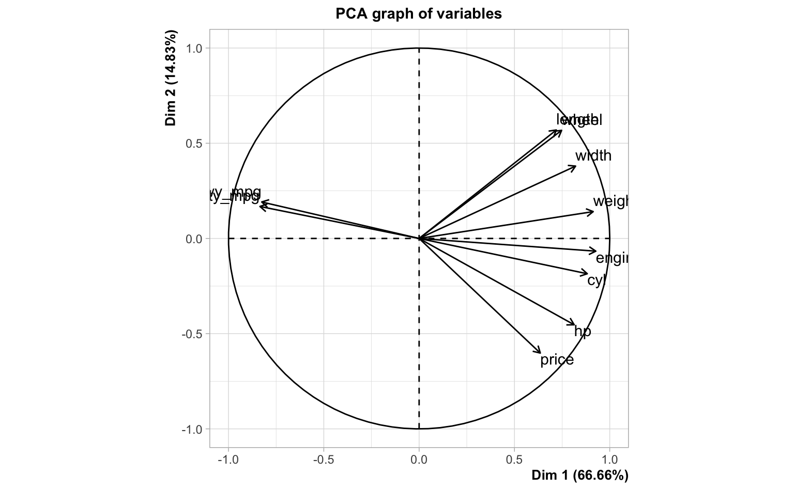
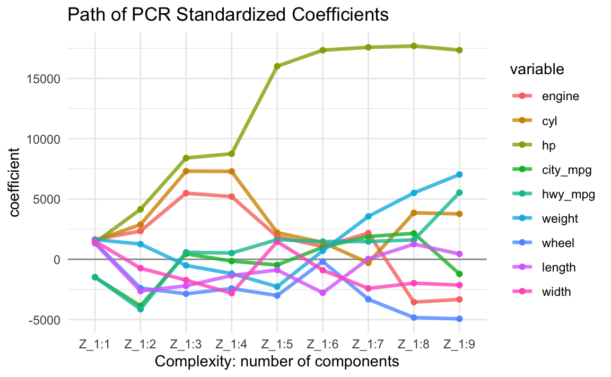

13 Principal Components Regression
The first dimension reduction method that we will describe to regularize a model is Principal Components Regression (PCR).
13.1 Motivation Example
To introduce PCR we are going to use a subset of the “2004 New Car and Truck Data” curated by Roger W. Johnson using records from Kiplinger’s Personal Finance. You can find more information about this data in the following url:
http://jse.amstat.org/datasets/04cars.txt
The data file, cars2004.csv, is available in the following github repository:
https://github.com/allmodelsarewrong/data
The data set consists of 10 variables measured on 385 cars. Here’s what the first six rows (and ten columns) look like:
#> price engine cyl hp city_mpg
#> Acura 3.5 RL 4dr 43755 3.5 6 225 18
#> Acura 3.5 RL w/Navigation 4dr 46100 3.5 6 225 18
#> Acura MDX 36945 3.5 6 265 17
#> Acura NSX coupe 2dr manual S 89765 3.2 6 290 17
#> Acura RSX Type S 2dr 23820 2.0 4 200 24
#> Acura TL 4dr 33195 3.2 6 270 20
#> hwy_mpg weight wheel length width
#> Acura 3.5 RL 4dr 24 3880 115 197 72
#> Acura 3.5 RL w/Navigation 4dr 24 3893 115 197 72
#> Acura MDX 23 4451 106 189 77
#> Acura NSX coupe 2dr manual S 24 3153 100 174 71
#> Acura RSX Type S 2dr 31 2778 101 172 68
#> Acura TL 4dr 28 3575 108 186 72In this example we take the variable price as the response, and the rest of
the columns as input or predictor variables:
enginecylhpcity_mpghw_mpgweightwheellengthwidth
The regression model is:
\[ \texttt{price} = b_0 + b_1 \texttt{cyl} + b_2 \texttt{hp} + \dots + b_9 \texttt{width} + \boldsymbol{\varepsilon} \]
For exploration purposes, let’s examine the matrix of correlations among all variables:
#> engine cyl hp city_mpg hwy_mpg weight wheel length width
#> price 0.6 0.654 0.836 -0.485 -0.469 0.476 0.204 0.210 0.314
#> engine 0.912 0.778 -0.706 -0.708 0.812 0.631 0.624 0.727
#> cyl 0.792 -0.670 -0.664 0.731 0.553 0.547 0.621
#> hp -0.672 -0.652 0.631 0.396 0.381 0.500
#> city_mpg 0.941 -0.736 -0.481 -0.468 -0.590
#> hwy_mpg -0.789 -0.455 -0.390 -0.585
#> weight 0.751 0.653 0.808
#> wheel 0.867 0.760
#> length 0.752And let’s also take a look at the circle of correlations, from the output of a PCA on the entire data set:
#> Error in text.default(cars_pca$var$coord[1, 1], cars_pca$var$coord[1, : plot.new has not been called yet
Computing the OLS solution for the regression model of price onto the
other nine predictors we obtain:
#> Estimate Std. Error t value Pr(>|t|)
#> (Intercept) 32536.025 17777.488 1.8302 6.802e-02
#> engine -3273.053 1542.595 -2.1218 3.451e-02
#> cyl 2520.927 896.202 2.8129 5.168e-03
#> hp 246.595 13.201 18.6797 1.621e-55
#> city_mpg -229.987 332.824 -0.6910 4.900e-01
#> hwy_mpg 979.967 345.558 2.8359 4.817e-03
#> weight 9.937 2.045 4.8584 1.741e-06
#> wheel -695.392 172.896 -4.0220 6.980e-05
#> length 33.690 89.660 0.3758 7.073e-01
#> width -635.382 306.344 -2.0741 3.875e-02Out of curiosity, let’s compare the correlations and the coefficients:
#> correlation coefficient
#> engine 0.5997873 -3273.05304
#> cyl 0.6544123 2520.92691
#> hp 0.8360930 246.59496
#> city_mpg -0.4854130 -229.98735
#> hwy_mpg -0.4694315 979.96656
#> weight 0.4760867 9.93652
#> wheel 0.2035464 -695.39157
#> length 0.2096682 33.69009
#> width 0.3135383 -635.38224As you can tell from the above output, some correlation signs don’t match
the signs of their corresponding regression coefficients. For example,
engine is positively correlated with price but it turns out to have a
negative regression coefficient. Or look at hwy_mpg which is negatively
correlated with price but it has a positive regression coefficient.
13.2 The PCR Model
In PCR, we seek principal components \(\mathbf{z_1}, \dots, \mathbf{z_k}\), linear combinations of the inputs: \(\mathbf{z_k} = \mathbf{Xv_k}\).
Figure 13.1: PCs as linear combinations of input variables
If we retain all principal components, then we know that we can factorize the input matrix \(\mathbf{X}\) as:
\[ \mathbf{X} = \mathbf{Z V^\mathsf{T}} \]
where:
- \(\mathbf{Z}\) is the matrix of principal components
- \(\mathbf{V}\) is the matrix of loadings
If we only keep a subset of \(k < p\) PCs, then we have a decomposition of the data matrix into a signal part captured by \(k\) components, and a residual or noise part:
\[ \underset{n \times p}{\mathbf{X}} = \underset{n \times k}{\mathbf{Z}} \hspace{1mm} \underset{k \times k}{\mathbf{V^\mathsf{T}}} + \underset{n \times k}{\mathbf{E}} \]Figure 13.2: Matrix diagram for inputs
The idea is to use the components \(\mathbf{Z}\) as predictors of \(\mathbf{y}\). More specifically, the idea is to fit a linear regression in order to find coefficients \(\mathbf{b}\):
\[ \mathbf{y} = \mathbf{Zb} + \mathbf{e} \]
Figure 13.3: Matrix diagram for response
Usually, you don’t use all \(p\) PCs, but just a few of them. In other words, if we only keep a subset of \(k < p\) PCs, then the idea of PCR remains constant: use the \(k\) components in \(\mathbf{Z}\) as predictors of \(\mathbf{y}\):
\[ \mathbf{\hat{y}} = \mathbf{Z b} \]
Without loss of generality suppose the predictors and response are standardized. In Principal Components Regression we regress \(\mathbf{y}\) onto the PC’s:
\[ \mathbf{\hat{y}} = b_1 \mathbf{z_1} + b \mathbf{z_2} + \dots + b_p \mathbf{z_k} \]
The vector of PCR coefficients is obtained via ordinary least squares (OLS):
\[ \mathbf{b} = \mathbf{(Z^\mathsf{T} Z)^{-1} Z^\mathsf{T} y} \]
Using the cars2004 data set, with the PCA of the inputs, we can run a linear
regression of price onto all nine PCs:
#> Regression coefficients for all PCs
#> Estimate Std. Error t value Pr(>|t|)
#> PC1 -4470.761 205.1288 -21.7949 0.0000
#> PC2 7608.419 468.4759 16.2408 0.0000
#> PC3 -9650.324 660.1829 -14.6177 0.0000
#> PC4 -1768.547 980.6487 -1.8034 0.0721
#> PC5 10528.146 1115.0825 9.4416 0.0000
#> PC6 -5593.736 1177.6700 -4.7498 0.0000
#> PC7 -5746.452 1721.5725 -3.3379 0.0009
#> PC8 -7606.196 1926.3769 -3.9484 0.0001
#> PC9 5473.090 2660.3834 2.0573 0.0404If we only take the first two PCs, then the regression coefficients are:
#> Estimate Std. Error t value Pr(>|t|)
#> PC1 -4470.761 205.1288 -21.7949 0
#> PC2 7608.419 468.4759 16.2408 0Likewise, if take only the first three PCs, then the regression coefficients are:
#> Estimate Std. Error t value Pr(>|t|)
#> PC1 -4470.761 205.1288 -21.7949 0
#> PC2 7608.419 468.4759 16.2408 0
#> PC3 -9650.324 660.1829 -14.6177 0Because of uncorrelatedness, the contributions and estimated coefficient of a PC are unaffected by which other PCs are also included in the regression.
13.3 How does PCR work?
Start with \(\mathbf{X} \in \mathbb{R}^{n \times p}\), assuming standardized data. Then, perform PCA on \(\mathbf{X}\): either a EVD of a multiple of \(\mathbf{X^\mathsf{T} X}\) (e.g. \((n-1)^{-1} \mathbf{X^\mathsf{T} X}\)), or the SVD of \(\mathbf{X} = \mathbf{U D V^\mathsf{T}}\). In either case, \(\mathbf{X} = \mathbf{Z V^\mathsf{T}}\) (the matrix of PC’s times the transpose of the matrix of loadings).
From OLS, we have:
\[ \mathbf{\hat{y}} = \mathbf{X (X^\mathsf{T} X)^{-1} X^\mathsf{T} y} = \mathbf{Xb}_\text{ols} \]
We can replace \(\mathbf{X}\) by \(\mathbf{Z V^\mathsf{T}}\):
\[\begin{align*} \mathbf{\hat{y}} &= \mathbf{X (X^\mathsf{T} X)^{-1} X^\mathsf{T} y} \\ &= \mathbf{Z V^\mathsf{T}} \left (\mathbf{(Z V^\mathsf{T})^\mathsf{T} Z V^\mathsf{T}} \right )^{-1} \mathbf{(Z V^\mathsf{T})^\mathsf{T} y} \\ &= \mathbf{Z V^\mathsf{T}} \left (\mathbf{V Z^\mathsf{T} Z V^\mathsf{T}} \right )^{-1} \mathbf{V Z^\mathsf{T} y} \\ &= \mathbf{Z V^\mathsf{T}} (\mathbf{V \Lambda V^\mathsf{T}})^{-1} \mathbf{V Z^\mathsf{T} y} \\ &= \mathbf{Z V^\mathsf{T}} (\mathbf{V} \mathbf{\Lambda}^{-1} \mathbf{V^\mathsf{T}}) \mathbf{V Z^\mathsf{T} y} \\ &= \mathbf{Z} \mathbf{\Lambda}^{-1} \mathbf{Z^\mathsf{T} y} \\ &= \mathbf{Zb}_\text{pcr} \end{align*}\]
13.3.1 Transition Formula
In PCR, if \(k = p\) (and assuming \(\mathbf{X}\) is of full-rank), which means that if you keep all PC’s, what happens is:
\[\begin{align*} \mathbf{\hat{y}} &= \mathbf{X} \mathbf{b}_{\text{ols}} \\ &= \mathbf{Z V^\mathsf{T}} \mathbf{b}_{\text{ols}} \\ &= \mathbf{Z} \mathbf{b}_{\text{pcr}} \end{align*}\]
We can reexpress the PCR coefficients in terms of the original variables.
\[\begin{align*} \mathbf{\hat{y}} &= \mathbf{Z} \mathbf{b}_{\text{pcr}} \\ &= \mathbf{X V} \mathbf{b}_{\text{pcr}} \\ &= \mathbf{X} \mathbf{b}_{\text{ols}} \end{align*}\]
In summary, we can go back and forth between regression coefficients for PC scores, and regression coefficients for original input features:
\(\mathbf{\hat{y}} = \mathbf{X} \mathbf{b}_\text{ols} = \mathbf{Z V^\mathsf{T}} \mathbf{b}_\text{ols} = \mathbf{Z b}_\text{pcr}\).
\(\mathbf{\hat{y}} = \mathbf{Z} \mathbf{b}_\text{pcr} = \mathbf{X V} \mathbf{b}_\text{pcr} = \mathbf{X b}_\text{ols}\).
The following output shows the regression coefficients of all nine regression equations in terms of the original input variables:
#> Z_1:1 Z_1:2 Z_1:3 Z_1:4 Z_1:5 Z_1:6 Z_1:7 Z_1:8 Z_1:9
#> engine 1641 2345 5487 5203 1887 1064 2168.5 -3551 -3327
#> cyl 1544 2881 7312 7289 2213 1401 -295.5 3856 3766
#> hp 1377 4148 8402 8755 16016 17348 17585.7 17700 17352
#> city_mpg -1487 -3864 459 -149 -470 999 1891.3 2151 -1213
#> hwy_mpg -1472 -4140 583 516 1633 1468 1477.9 1607 5536
#> weight 1642 1261 -510 -1187 -2266 707 3557.7 5507 7033
#> wheel 1385 -2392 -2860 -2422 -3009 -187 -3315.7 -4832 -4938
#> length 1332 -2634 -2202 -1346 -883 -2778 28.2 1260 447
#> width 1501 -738 -1731 -2811 1464 -904 -2413.8 -1978 -2142Obviously, if you keep all components, you aren’t changing anything: you’re spending the same amount of money as you were in regular least-squares regression.
#> engine cyl hp city_mpg hwy_mpg weight wheel
#> -3326.7904 3766.1495 17352.2185 -1213.0142 5535.9355 7032.5383 -4937.8106
#> length width
#> 446.9752 -2141.8196compare with the regression coefficients of OLS:
#> Xengine Xcyl Xhp Xcity_mpg Xhwy_mpg Xweight Xwheel
#> -3326.7904 3766.1495 17352.2185 -1213.0142 5535.9355 7032.5383 -4937.8106
#> Xlength Xwidth
#> 446.9752 -2141.8196The idea is to keep only a few components. Hence, the goal is to find \(k\) principal components (with \(k \ll p\); \(k\) is called the tuning parameter or the hyperparameter). How do we determine \(k\)? The typical way is to use cross-validation.
13.3.2 Size of Coefficients
Let’s look at the evolution of the PCA regression coefficients. This is a very interesting plot that allows us to see how the size of the coefficients grow as we add more and more PCs into the regression equation:

13.4 Selecting Number of PCs
The number \(q\) of PCs to use in PC Regression is a hyperparameter or tuning parameter. This means that we cannot derive an analytical expression that tells us what the number \(q\) of PCs is the optimal to be used. So how do we find \(q\)? We find \(q\) through resampling methods; the most popular resampling technique that most practioners apply is \(K\)-fold cross-validation. Here’s a description of the steps to be carried out:
Assumet that we have a training data set consisting of \(n\) data points: \(\mathcal{D}_{train} = (\mathbf{x_1}, y_1), \dots, (\mathbf{x_n}, y_n)\). Using \(K\)-fold cross-validation, we (randomly) split the data into \(K\) folds:
\[ \mathcal{D}_{train} = \mathcal{D}_{fold-1} \cup \mathcal{D}_{fold-2} \dots \cup \mathcal{D}_{fold-K} \]
Each fold set \(\mathcal{D}_{fold-k}\) will play the role of an evaluation set \(\mathcal{D}_{eval-k}\). Having defined the \(k\) fold sets, we form the corresponding \(K\) retraining sets:
- \(\mathcal{D}_{train-1} = \mathcal{D}_{train} \setminus \mathcal{D}_{fold-1}\)
- \(\mathcal{D}_{train-2} = \mathcal{D}_{train} \setminus \mathcal{D}_{fold-2}\)
- \(\dots\)
- \(\mathcal{D}_{train-K} = \mathcal{D}_{train} \setminus \mathcal{D}_{fold-K}\)
The cross-validation procedure then repeats the following loops:
- For \(q = 1, 2, \dots, r = rank(\mathbf{X})\)
- For \(k = 1, \dots, K\)
- fit PCR model \(h_{q,k}\) with \(q\)-PCs on \(\mathcal{D}_{train-k}\)
- compute and store \(E_{eval-k} (h_{q,k})\) using \(\mathcal{D}_{eval-k}\)
- end for \(k\)
- compute and store \(E_{cv_{q}} = \frac{1}{K} \sum_k E_{eval-k}(h_{q,k})\)
- For \(k = 1, \dots, K\)
- end for \(q\)
- Compare all cross-validation errors \(E_{cv_1}, E_{cv_2}, \dots, E_{cv_r}\) and choose the smallest of them, say \(E_{cv_{q^*}}\)
- Use \(q^*\) PCs to fit the (finalist) PCR model: \(\mathbf{\hat{y}} = b_1 \mathbf{z_1} + b_2 \mathbf{z_2} + \dots + b_q^* \mathbf{z_q^*} = \mathbf{Z_{1:q^*}} \mathbf{b_{q^*}}\)
- Remember that we can reexpress the PCR model in terms of the original predictors: \(\mathbf{\hat{y}} = (\mathbf{XV_{1:q^*}}) \mathbf{b_{q^*}}\)
Remarks
The catch: those PC’s you choose to keep may not be good predictors of \(\mathbf{y}\). That is, there is a chance that some of those PC’s you discarded actually capture a fair amount of the signal. Unfortunately, there is no way of knowing this in a real-life setting. Partial Least Squares was developed as a cure for this, which is the topic of the next chapter.